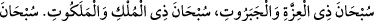
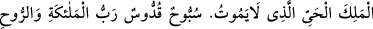

düşünün. Çünkü mesela meleklerden İsrâfil adlı bir mahluk vardır ki Arş’ın
köşelerinden biri onun omuzlarındadır. Ayakları ise en alttaki arzdadır. Allah’ın
azametinden dolayı o kadar zorlanır o kadar küçülür ki nihayet vas’a döner.”[165]
Kamus’ta da bildirildiği üzere vas’ serçeden küçük bir kuştur. Allah Teâlâ Arş’ı
yemyeşil bir cevherden yaratmıştır. Arş’ın bir milyon altı yüz bin adet başı vardır. Her
bir başta bir milyon altı yüz bin dil vardır. Her biri bir milyon farklı dille tesbihte
bulunur. Cenâb-ı Allah, Arş lugatlerinden her bir lugatle melekûtünde kendisini o
lugatte tesbih ve takdis edecek bir varlık yaratır. Arş her gün nurdan yetmiş bin renge
büründürülür ki hiçbir yaratık ona bakma gücüne sahip değildir. Bütün varlıkların
Arş’ın büyüklüğüne göre durumu, sahrâya atılmış bir yüzük gibidir. Cenab-ı Hak Arş ile
onu taşıyanlar arasına ateşten yetmiş perde, sudan yetmiş perde, kardan yetmiş perde,
beyaz inciden yetmiş perde, yemyeşil zebercedden yetmiş perde, kırmızı yakuttan yetmiş
perde, nurdan yetmiş perde, zulmetten yetmiş perde çekmiştir ki çarpılıp yanacağım
korkusuyla hiçbiri Arş’a bakmaz.
Fakir der ki: Bütün bu rivayetler “söz konusu meleklerin Arş’ı yüklenmesi”nin, bazı
müfessirlerin düşündüğü gibi “koruyup kollamak”tan mecâz olmayıp, hakikî mânâda
anlaşılması gerektiğine delâlet etmektedir. Yemin ederim ki, bu kadar büyük ve geniş
olmasına rağmen Arş’ın “meleklerin boynuzları”, “sırtları” veya “omuzları” üzerinde
bulunması, Yüce Allah’ın ne kadar muazzam, ne denli büyük bir zat olduğuna daha iyi
delâlet etmektedir. Zira bugünkü dört melek ve kıyâmet günündeki sekiz melek Arş için
birer ayak ve sütun mesâbesindedir. Saraylar sütunlara yüklendiği gibi, Arş da
meleklere yüklenmiştir. Dolayısıyla bu, sahih olarak gelen “Arş’ın ayakları olması” ve
“Arş’ın bütün cisimleri kuşatması” fikri ile bir zıtlık arzetmez. Çünkü Arş’ın gerçekten
de asılı olması ve meleklerin Arş’ın bütününü yüklenmiş olması câizdir.
“Ve çevresinde bulunanlar..” Bir şeyin “havl”i kendisine dönülmesini mümkün kılan
tarafıdır. “Rablerini överek tesbih ederler;” yâni O’nu yüce şânına yaraşmayan her
şeyden tenzih eder, uzak bilirler. Hem de sonsuz sayıdaki nimetlerine hamd etmek
suretiyle..
Fethu’r-Rahmân’da şöyle der: Bu melekler şöyle tesbih ederler:
“Tenzih ederiz o güçlü Cebbâr’ı. Görünür görünmez her şeyin sâhibi olan zâtı.
Tenzih ederiz o asla ölmeyecek Diriyi. O Sübbûhtur, Kuddûstur (her türlü eksiklikten
münezzeh yüce bir zattır.) O, meleklerin ve Ruh’un Rabbıdır.”
Âyette “tesbih etmek” meleklerin esas işleri olarak gösterilirken “hamd etmeleri”
sadece bir hâl olarak zikredilmiştir. Çünkü hamd, tesbihin aksine, bu meleklerin
hallerinin bir gereğidir. Tesbihe ise ancak Allah Teâlâ’yı yüce şânına yakışmayan bir
özellikle tavsif eden birini reddetmek gibi ârızî bir durumdan dolayı başvurulur.